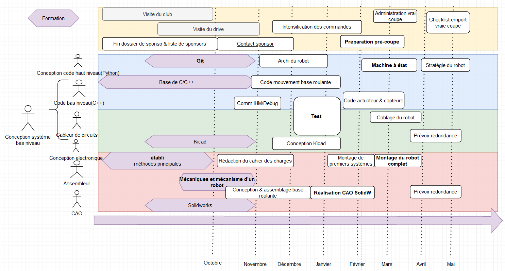

Introduction
Ce site contient la documentation du club robot de l'ENAC. Il est en cours de construction, donc très incomplet pour l'instant. N'hésites pas contribuer !
Si vous êtes nouveau, jetez un coup d'oeil à l'introduction pour des tutoriels intéressants à suivre !
Lorsque vous avez besoin d'aide spécifique sur l'utilisation d'un logiciel, consultez les Outils Communs
On conseille au cours de l'année de lire les **Retour d'Experience (REX) que ce soit sur la conception des robots en début d'année puis sur la coupe pour ne pas répéter les erreurs.
Ensuite, si vous avez besoin de tutos spécifiques sur certains sujets ou des clés pour se lancer, il faut consulter les petits tutos
Pour les programmeurs, consulter Tuto Code pour comprendre le principe.
introductions
Vous êtes nouvel arrivant au club robot ? Tout d'abord, consultez la checklist pour créer les comptes et accéder à nos outils en ligne (demander les accès au président si vousl es avez pas ). Vous pouvez également créer les comptes au fur et à mesure de vos besoins. Checklist
Ensuite, nous vous conseillons de vous "sensibiliser" à toutes les parties d'un robot, en suivant l'ordre, et de choisir une "spécialité" dans seulement un des 4 pôles (mécanique, électronique, programmation en C, en Python) après avoir suivi les divers tutos pour ne pas perdre de temps à tenter de tout maitriser et en ne sachant rien faire à la fin ;)
L'idée est de passer quelques heures avec chaque outil pour comprendre son utilité au club robot dans introduction. Ensuite, selon votre pôle, approfondir dans tutoriel les outils choisis pour l'utiliser au mieux.
Pour revoir tous les fichiers, consulter le Google drive associé
Introductions à suivre
- Intro robot (1h)
- Organisation du club (30 min)
- Allumer une LED de la carte tuto (2h)
- Introduction à la modélisation Solidworks et à l'impression 3D (2h)
- Intro Git (1h30)
Tutoriels en ligne recommandés selon vos pôles de prédilection
| Tutoriel | Méca | Elec | Info - C | Info - Python |
|---|---|---|---|---|
| Tutoriel C généraliste (Partie I) | X | |||
| Carte tutos (Partie II) | X | X | ||
| Intro Python (pour le club robot) | X | |||
| Intro Kicad | X | |||
| Intro Solidworks | X |
Formations possibles à demander:
Tous les tutos vu au dessus peuvent être abordés (au moins une première fois) en présentiel, selon le temps des personnes disponibles :
| Formations | Méca | Elec | Info - C | Info - Python | Connaissances requises |
|---|---|---|---|---|---|
| Qu'est-ce qu'un robot ? + visite salle (~1h30) | X | X | X | X | |
| Utilisation de solidworks (~2h) | X | ||||
| Introduction à l'établi menuiserie (~1h30) | X | ||||
| Utilisation imprimante 3D (~1h) | X | Solidworks/modélisation 3D | |||
| Formation git (~1h) (faisable en ligne) | X | X | X | ||
| Formation Kicad (~2h) (faisable en ligne) | X | ||||
| Communication inter-programmes avec eCAL (~0.5h) (faisable en ligne) | X | Python |
Une liste de tutoriels sur tous les sujets :
https://github.com/VRAC-team/la-maxi-liste-ressources-eurobot
Introduction d'un robot
Comment réaliser un robot ?
Tout d'abord, il faut décider de quoi faire -> Il faut rédiger une sorte de cahier des charges.
Ensuite, il faut réunir la liste du matériel nécessaire, lesquels sont à commander par exemple.
Enfin, il faut établir la gestion du projet, c'est à dire savoir qui fait quoi et à quel moment pour ne pénaliser personne dans son travail, c'est à dire décider d'un calendrier de formation, de deadlines,... Des exemples de timeline pour l'année sont sur le guide du nouvel arrivant, ici.
Ainsi, en ordre d'idée, il faudrait idéalement que le robot roule déjà dès fin décembre, et qu'il est capable de marquer des points en février. Par exemple celui-ci : 
De quoi est constitué un robot ?
Base roulante
Base mécanique
Capteurs
Localisation
Actionneurs
Microcontrolleur
Carte electronique
Ordinateur
Bases de Python
Introduction
Si vous avez jamais programmés en Python, Zeste de savoir propose une bonne introduction des notions de base (communes à tous les languages), avec un TP pour appliquer directement. Le tuto devrait prendre ~8H à faire au total.
Le python au club robot
Au club robot, nous utilisons le python pour réaliser de nombreux programmes, que ce soit des scripts, des interfaces graphiques ou encore la stratégie du robot. Pour cela, il peut être nécessaire de bien découper le programme, et d'être capable parfois de traiter en temps réel des données provenant d'un autre ordinateur.
Ainsi, une vue globale des programmes que nous maitenons et développons chaque année est disponible sur tuto code - architecture globale
TP - Télécommande robot
(Durée : Environ 4h)
Si vous souhaitez prendre en main un exemple de programme que l'on peut être amené à developper au club robot en Python, une bonne introduction consiste à créer une "télécommande" pour un robot simulé.
//TODO : à rédiger
Intro robot_sim
Intro robot_kontrol
Intro middleware
Ensuite, Créer un fichier python, avec un publisher de cmd_vel avec eCAL, et voir ce qui se passe sur robot_kontrol
Réaliser un programme qui prend en entrée une lettre, et executer une cmd_vel correspondante (zqsd), et toute autre commande entraine l'arrêt.
Correction :
Introduction au C au club robot
Selon votre niveau, il faut tout d'abord à apprendre à utiliser le C en général (I), et lorsque c'est bon, vous pourrez passer au C en embarqué (II) La partie I est réalisable de chez vous, la II peut être plus embêtante.
Installation
Il va falloir installer plusieurs choses :
Outils de compilation (I):
Editeur de texte (I et II):
L'éditeur à utiliser est visual studio code. VS code
Outil de compilation pour l'embarqué (II):
Une extension de VS code qui permet de compiler vers les microcontrolleurs platformio
I - Introduction au C en général
Suivre le tutoriel de Zeste de savoir. Le tutoriel en entier devrait prendre une dizaine d'heures, n'hésitez pas à survoler certains détails et ne vous embétez pas à retenir, vous pouvez toujours retrouver le tutoriel si vous avez oublié quelque chose :p Par exemple, focalisez vous sur les types assez simple (int, float, char), les opérateurs mathématiques basiques, les conditions et les fonctions.
Les parties très importantes sont la 3,5,6,7,8,9, 11 et 12. Les parties moins importantes mais à lire sont la 4,10,13 et 14.
II - Le C pour l'embarqué
Pour l'instant non porté sur le site : https://docs.google.com/document/d/1-jxdJCb0QWJrYiXEooCPBYri_L7LV24AF4ST5_-yBRs/edit https://github.com/Fabien-B/tutosBoardRoboticClub/
Outils Communs
Au club on utilise linux pour la plupart des trucs (tout sauf la méca). Il est conseillé de l'installer : Installer un dual boot
On utilise git pour la gestion de version du code. C'est un outil magique pour travailler à plusiaurs sur un projet ! Commencer avec Git
On utilise actuellement Eclipse pour le code. On va peut être le remplacer par CLion. Eclipse
Enfin, on utilise kicad pour les cartes électroniques. Kicad
Voilà ! (on parlera de SolidWorks un de ces jours).
Installer Dual Boot Linux
Développer sous windows peut parfois être un peu compliqué, et comme d'une manière générale linux c'est mieux, on va apprendre comment l'installer sur ton ordi.
On va installer un dual boot, c'est à dire que Windows et Linux vont cohabiter sur ton disque dur, et il faudra choisir au démarrage lequel tu voudras lancer. Tu aura donc les performances maximales, mais ne pourra pas etre sur les deux système simultanément.
Préliminaires sous windows
Comme Windows n'aime pas partager, il faudra d'aboard faire quelques réglages sous Windows pour permettre l'installation de Linux à côté de celui-ci. Il est aussi plus sage de sauvegarder toutes tes données importantes sur un support hors de ton PC (clé USB, disuqe dur, ...). Je n'ai jamais eu aucune pertes de données, mais comme on joue avec les partitions de son disque dur, on n'est jamais à l'abri d'une erreur ou d'une panne de courant au mauvais moment.
- Désactiver la mise en veille prolongée : par défaut, Windows ne s'éteint pas quand on le lui dit mais rentre en veille prolongée, et ça empèche de démarrer sous un autre OS.
- ouvrir un terminal avec les droits administrateur (clic droit sur le logo windows, shell)
- entrer la commande
powercfg.exe /hibernate off
- Reconfigurer le disque en AHCI si besoin : Sur certains PC récents, les disques utilisent un mode qui n'est pas encore supporté par Linux.
- Rédémarre ton PC et entre dans les réglages du BIOS (en martelant au démarrage une touche dépendant du PC, en général F2 ou F10). Cherche la mention d'un SATA mode, et vérifie qu'il est réglé sur AHCI.
- S'il est bien sur ce mode, passe directement au partitionnement de ton disque.
- S'il est réglé sur RAID ou un autre truc bizarre (comme RPS with optane), ne le change pas, rédémarre ton ordinateur (sur Windows) et suis ce tuto ou celui-ci pour reconfigurer le disque en AHCI.
- S'il est sur autre chose, renseigne toi !
- Rédémarre ton PC et entre dans les réglages du BIOS (en martelant au démarrage une touche dépendant du PC, en général F2 ou F10). Cherche la mention d'un SATA mode, et vérifie qu'il est réglé sur AHCI.
- Partitionner le disque dur : afin d'éviter tout problème de partionnement à cause de la fragmentation Windows, il vaut mieux utiliser directement les outils de Windows :
- appuyer sur
Windows + R - saisir
diskmgmt.msc - clic droit sur le volume à partitionner (Disque 0 par exemple) et sélectionner
Réduire le volume. Si tu as plusieurs disques, par exemple un SSD et un HDD, il vaut mieux utiliser le SSD si tu peux pour des raisons de performances, mais ça marchera aussi très bien sur le HDD ! - choisir la taille de la partition désirée (Ubuntu demande 15Go minimum et recommande 25Go ; si tu as de la place tu peux libérer un espace de 60Go ou plus !)
- appuyer sur
Ton disque dur a maintenant un espace inutilisé, il est temps de l'utiliser !
Installer Linux
Il existe beaucoup de distributions Linux, et nous allons ici voir comment installer Ubuntu, qui reste simple et adapté à nos besoins. Tu auras besoin d'une clé USB (attention, la clé sera formatée).
Préparez une clé bootable
- Télécharge l'ISO de la dernière LTS : https://ubuntu.com/download/desktop
- Flash l'ISO ainsi téléchargée sur ta clé. Si tu ne sais pas faire, je te conseille d'utiliser Etcher qui permet de faire ça en 4 clicks :
- "Select Image" t'invite a choisir l'ISO que tu as déjà téléchargé.
- "Select Drive" te demande de choisir le disque à flasher. Sois bien sûr de choisir la clef USB, et pas autre chose !
- "Flash!" lance l'opération et raconte ce qu'il fait à ta clef au fur et à mesure.
- Une fois la clé flashée, redémarre ton ordinateur et entre das les réglagles du BIOS.
- Désactive le
UEFI Secure Bootqui t'empècherai de démarrer sur ta clé. - Désactive le
Fast Start-Upqui cette option existe. - Optionnel : Change l'odre de priorité pour booter sur la clé USB avant le disque dur.
- Sauvegarde de modifications et quitte le BIOS. Ton ordi va redémarrer.
- Désactive le
- Si tu as changé l'ordre de priorité du boot, l'ordinateur devrait redémarrer sur Linux. Sinon, démarre manuellement sur la clé en pressant la touche appropriée (souvent F12 ou F2).
- Sélectionne "try Ubuntu"
Ubuntu devrait alors démarrer, et tu peux le tester. Passons maintenant à l'installation !
Installation d'Ubuntu
On va d'abord créer ls partions nécessaires à Ubuntu. Il est possible de faire tout ça directement de puis l'installeur, mais je préfère le faire avant, l'interface étant plus claire !
- démarre le programme
gparted - sélectionne le disque ou tu as libérer de l'espace pour Linux
- Optionnel mais recommandé : Crée un partition de type
swapd'une taille égale à la taille de ta RAM. - Crée une partition de type
ext4. Si tu as réservé plus de 40Go pour linux, fais la d'environ 25 ou 30 Go, et crée une autre partitionext4sur la place restante. Cela permettra de changer facilement de version d'Ubuntu sans perdre de réglages ni de données. - Applique les modifications (ça peut prendre du temps), et quitte gparted.
Tout est prêt, allons-y !
- démarre l'installeur (il doit être sur le bureau).
- Lorsqu'on te demande où installer le système Linux, choisis Autre chose (ou Something else).
- Sélectionne la partion swap que tu as crées et configure la en
type: swap(ça devrait être déjà fait) - Sélectionne la première (ou seule) partition ext4 que tu as créee, et configure la en
type: ext4etmount point: /en la formatant. - Si tu as as crée une deuxième partition ext4, configure la en
type: ext4etmount point: /home. - Laisse l'emplacement du démarrage à sa valeur par défaut, qui devrait être le disque ou tu as Windows.
- Continue avec la suite de l'installation, qui devrait être assez simple, et prendre un certain temps (~20 min). Tu peut utiliser ton ordinateur pendant ce temps.
- Quand l'installation sera terminée, Ubuntu te proposera de rédémarrer sur ton nouveau système. Accepte, et retire la clé de l'ordinateur lorsque l'ordinateur est éteint.
Au démarrage du PC, tu devrais maintenant atterrir sur une interface te permettant de choisir entre Ubuntu ou Windows. Teste les deux options pour vérifier que tout marche bien.
Passes au chapitre suivant pour installer les outils courants du club.
Git
Git est un gestionnaire de version qu'on utilise pour gérer le code. Il permet entre autres de facilement collaborer à plusieurs sur un même code, ou encore de revenir à une version antérieur d'un fichier.
- se créer un compte sur Github
- donner son nom d'utilisateur à un responsable du club afin qu'il vous ajoute à l'organisation ENACRobotique
- installer git :
sudo apt install git - configurer son email et son nom :
git config --global user.name "Michel"git config --global user.email "michel.du@pont.fr"
Afin de faciliter l'utilisation de github, il est conseillé de créer une paire de clés SSH et de d'ajouter la clé publique à votre compte github. Cela permettra de pusher vos modif sans taper votre login/mot de passe à chaque fois :
- créer un paire de clés :
- ouvrir un terminal et lancer
ssh-keygen - Garder le chemin par défaut
- Ne pas mettre de passphrase pour n'avoir rien à taper lors d'un push.
- Vous pouvez visualiser la clé avec
cat ~/.ssh/id_rsa.pub
- ouvrir un terminal et lancer
- Ajouter la clé à votre compte github :
- connectez vous à Github, et allez dans vos Settings à l'onglet SSH and GPG keys
- Cliquez sur New SSH key
- Entrez un titre pour vous rappeler à quel ordinateur cette clé est liée
- copiez collez la totalité de votre clé publique (ce qui sort de
cat ~/.ssh/id_rsa.pub) - Add SSH key
- Confimez votre mot de passe
Vous pourrez maintenant cloner les dépôt github en utilisant SSH plutôt que HTTPS en cliquant sur Use SSH dans la petite fenêtre pour obtenir l'adresse du dépôt. L'adresse du dépôt devrait ressembler à ça : git@github.com:ENACRobotique/doc.git

VS Code
Editeur de texte (I et II):
L'éditeur à utiliser est visual studio code. VS code
Outil de compilation pour l'embarqué (II):
Une extension de VS code qui permet de compiler vers les microcontrolleurs platformio
Kicad
Kicad est le logiciel nous permettant de créer des cartes électroniques.
Installez le en suivant la procédure décrite ici :
À ce jour, la voici :
sudo add-apt-repository --yes ppa:js-reynaud/kicad-5.1sudo apt updatesudo apt install kicad
Plus de détails ici (vous pouvez vérifier si : http://kicad-pcb.org/download/ubuntu/
TODO : faire un tutoriel d'une carte electronique basique
Exemple de systémes (méca) et de robots
Asservissement
Le principe de l'asservissement est de permettre à un moteur d'atteindre un objectif donné par "l'utilisateur" (par exemple, atteindre telle position ou tenir telle vitesse, avec un certain degré de précision et de "rapidité" )
La théorie
La bible sur les principes généraux : PM-robotix
L'implémentation
Pour réaliser un asserv en vitesse, il faut :
- Fournir des consignes vitesse au robot, par exemple en envoyant du PWM grâce aux drivers moteurs types MD10C/D13S (Exemple du code de 2022)
- Lire les données des encodeurs rotatifs, pour savoir la vitesse des moteurs Exemple en 2022, lecture software. (plus d'info sur les encodeurs)
- Prévoir une "interface" avec l'ordinateur (en serial par exemple), c'est à dire pouvoir sur le port serial envoyer les coefficients du PID et recevoir les données de l'encodeur, pour pouvoir tracer des graphes/enrengistrer les données sur l'ordinateur
- Régler l'asservissement grâce à des courbes, en envoyant des consignes depuis le PC et en voyant le résultat
- Méthode de réglage : une idée de méthode de l'UTC
{kind=link}
Pour aller plus loin pour améliorer l'asserv
Pour l'instant, on s'arretait là, mais il peut-être intéressant de tester un asserv en position directement (qui envoie des consignes vers le systéme qui asservit en vitesse), ou d'implémenter les solutions vues en dessous.
TODO Différence lecture hardware/software des encodeurs
Réglage plus fin du PID : PM-robotix
Réglage plus fin du coeff des roues : RCVA
Mécanique
Choix des matériaux
Bois
Pas mal, mais contreplaqué de 5mm trop fin et pas assez résistant ?
verre acrylique, Impression 3D, métal
Structure générale
Motorisation
Holonome (x3 ou x4 ?), différentiel
Encodeurs
2022
Lancement d'objets (Exemples rusty - 2018)
Inventaire des systémes existants (Rusty ducks 2018)
On a déjà lancé des balles avec un moteur qui entraîne un galet, ça marche très bien.
On n'asservissait pas le moteur, donc on n'était pas super précis, mais des équipes asservissaient le moteur, et ils étaient assez précis. D'autres équipes utilisaient des petits solénoïdes avec une tige qui sort de quelques cm quand c'est alimenté, ça à l'air de bien marcher, mais on n'a jamais trouvé les bon trucs (on n'a peut être pas beaucoup chercher).
Et d'autres équipes font avec des turbines, on n'a jamais fait non plus, principalement car on n'en n'a pas au club.
Systéme en action chez les rusty
Axes d'amélioration
Avec des moteurs brushless, on peut obtenir des meilleures performances car un brushless ça se rapproche plus d'un moteur pas à pas que d'un moteur DC. Donc il est contrôlé assez précisément en vitesse, et ça ne va pas changer suivant la tension de la batterie (sauf si tu arrive à la limite max de rotation). Mais pour compenser le probléme du moteur dépendant de la tension de batterie, on peut mettre un régulateur de tension entre les deux.
Mais il n'y a pas que ça : quand tu envoie la balle et moteur ralenti. Donc soit tu as assez de puissance et d'inertie pour que le moteur ai retrouvé sa vitesse initiale avant que la prochaine balle n'arrive, soit il faut envoyer les balles les unes après les autres, doucement. C'est ce qu'on faisait.
Systéme en action pendant la finale chez robotech
Présentation robotech du systéme
Explication robotechs de leur robot 2018
Petits Tutos
Il y aura dans cette section des petits tutos sur des sujet divers et variés, qui ne méritent pas un chapitre entier.
Commençons par apprendre comment mettre en oeuvre une raspberry pi !
Problème lors du branchement d'une carte pendant quelques secondes : /dev/tty_xxx: Périphérique ou ressource occupé. Résolvez le problème !
| Tutoriel | Méca | Elec | Info - C | Info - Python |
| Les différents microcontrolleurs | | X | X | |
| Le simulateur et les IHM (2022-2023) | | | X | X |
Raspberry Pi
La Raspberry Pi est un petit ordinateur monocarte que l'on va embarquer dans certains de nos robots.
Graver l'image
Pour commencer, il faut télécharger une version récente de Raspbian, la distribution officielle pour la Raspberry Pi. Sachant qu'on va l'utiliser sans jamains brancher d'écran, il vaut mieux prendre la version Lite, bien plus légère.
Il va falloir graver cette image sur une carte SD. Pour cela, utilisez Etcher, qui est très simple d'utilisation et marche très bien.
Une fois l'image gravée, ne vous précipitez pas. Nous allons modifier quelques fichiers de la carte SD afin de faciliter la configuration.
Pré-configuration
WiFi : On va faire en sorte que la raspi se connecte directement au réseau WiFi du club.
Éditez le fichier <carte SD Raspi>/etc/wpa_supplicant/wpa_supplicant.conf (les droits d'admin seront sans doute nécessaires), et ajoutez le texte suivant (en remplaçant lemotdepasse par le mot de passe, bien entendu) :
network={
ssid="robot"
psk="lemotdepasse"
}
SSH : Pour activer le SSH sans brancher un écran et un clavier, créer un fichier ssh dans la partition boot (celle formatée en FAT). Les identifiants par défauts sont :
utilisateur: pi
hostname: raspberrypi
password : raspberry
Il est mainteant temps de démarrer la Raspberry Pi !
Configuration, la suite
On va donc démarrer la Raspberry Pi en l'alimantant soit par l'USB (solution la plus simple), soit par les broches GND et 5V (seulement si vous savez ce que vous faites !).
Elle devrait automatiquement se connecter au réseau WiFi. Vous pouvez tenter un ping raspberrypi, ou chercher son adresse sur l'interface du routeur.
Quand vous avez trouver, s'y connecter en SSH : ssh pi@raspberrypi, ou ssh pi@192.168.XXX.xxx.
sudo raspi-config : changer le hostname, rebooter. (autre choses ?)
UART : On va certainement utiliser l'UART de la raspi. Sur la Raspberry Pi 3 (et peut être aussi d'autres modèles), il faut modifier la configuration pour pouvoir l'utiliser (source).
Ajouter cette ligne au ficher /boot/config.txt : dtoverlay=pi3-disable-bt.
Dans le fichier /boot/cmdline.txt, supprimer console=serial0,115200.
Quand la raspberrypi sera démarrée, vous prendrez soin de vérifier que serial0 -> ttyAMA0 et serial1 -> ttyS0 en faisant un ls -l /dev/serial*.
Il est peut-être nécessaire d'aller activer l'UART dans sudo raspi-config. À vérifier.
Pour tester que ça marche : connecter RX et TX ensemble par un câble de breadboard, ouvez minicom minicom -D /dev/ttyAMA0, et taper des trucs. Si les caractères s'affichent c'est que ça marche. Si vous débranchez le fil ça ne devrait pas marcher. Pour quitter mninicom : CTRL+A, q, ENTER
Quelques packets à installer :
git: gestion de version,python3-pip: gestionnaire de modules python3,minicom: moniteur port série,vim: coloration syntaxique et clavier pour humain, pour l'éditeur de texte vi. Pour sortir : échap, puis:q, ou:q!si ça veut pas.
sudo apt install git python3-pip minicom vim
Quelques modules python que l'on va souvent utiliser :
pyserial: pour uiliser un port série,ivy-python: pour communiquer avec Ivy,bitstring: pour convertir des nombres en bytes et inversement.
Simulation et IHM
- Robokontrol
- Afficher la position du robot sur la carte
- Ctrl actionneurs
- Bouger robot (pos,vit)
- eCAL (monitor, recorder, player)
- Rejouer les données
- Afficher les msg
- Graphe en fc du tps
- robot_sim_ecal (en cours de création)
- Bouton+slider dynamique(scripter, avec délai)
- Afficher LIDAR
- Afficher etat du robot
Se débarasser du "périphérique occupé" lors du branchement d'un device
Le responsable de ce bazar, c'est ModemManager, un service qui permet de contrôler les périphériques mobile 2G/3G/4G. Plus d'infos.
On va faire en sorte qu'il blacklist tout les péiphériques tty*.
D'abord on exécute la commande sudo systemctl status ModemManager.
Voilà un exemple de sortie :
● ModemManager.service - Modem Manager
Loaded: loaded (/lib/systemd/system/ModemManager.service; enabled; vendor preset: enabled)
Active: active (running) since Fri 2019-11-15 15:42:25 CET; 13min ago
Main PID: 6815 (ModemManager)
Tasks: 3 (limit: 4915)
CGroup: /system.slice/ModemManager.service
└─6815 /usr/sbin/ModemManager --filter-policy=strict
Ensuite on va éditer le fichier indiqué à la ligne Loaded :
sudo vi /lib/systemd/system/ModemManager.service
A la section [Service] du fichier, rajouter une ligne :
[Service]
...
Environment="MM_FILTER_RULE_TTY_ACM_INTERFACE=0"
Enfin il faut recharger la configuration de systemctl et redémarrer le ModemManager:
sudo systemctl daemon-reload
sudo systemctl restart ModemManager
Source : https://askubuntu.com/a/1119498
Tutos elec
L'elec de base c'est pas sorcier, mais on peut pas l'inventer ! Alors voilà quelques petits tutos en rapport avec l'elec, notamment des schémas pour les circuits les plus courants.
Commencez donc par allumer une LED !
la LED
TL;DR; Prends entre 300 et 400 ohm.
La led, c'est la base. Il faut toujours avoir une LED sous la main. Alors commençons direct :

- Le premier "composant" (la flèche vers le haut) représente une source de tension continue (on ne travaille qu'en continu).
- Le 2ème est une résistance
- le 3ème une LED
- le dernier, la masse (point où potentiel vaut 0V)
Comme au collège, on suppose que le potentiel est constant le long d'un fil.
La LED est un semi-conducteur qui ne laisse passer le courant que dans un sens, de l'anode (le haut dans ce schéma) vers la cathode (le bas).
Elle a une tension de seuil en deçà de laquelle elle ne s'allume pas. La résistance est absolument nécessaire afin de ne pas griller la LED, où le système qui l'alimente !
Calculer la résistance
Pour calculer la résistance, nous devons connaître la tension d'alimentation (ici 5V, nous l'apellerons Vcc), la chute de tension aux bornes de la LED Vd, et le courant que nous voulons faire passer dans la led i.
Admettons pour l'exemple que la chute de tension au borne de la LED soit Vd=1.6V, et nous voulons faire passer un courant de i=10mA.
- on calcule d'abord la tension au borne de la résistance (loi des mailles):
Vr=Vcc-Vd(donc ici: Vr=3.4V) - on calcule ensuite la résistance avec la loi d'ohm (U=RI):
R=Vr/i(donc ici: R=3.4/0.01, R=340 ohms)
déterminer les paramètres
C'est bien tout ça, mais comment on trouve Vd et i ? La réponse se trouve dans un document appelé la datasheet.
Ce document existe pour tout les composants électronique, et il faut le consulter avant d'utiliser un composant.
Pour des composants "standards", il n'y aura pas besoin de tout lire, on pourra se concentrer sur quelques infos précises.
Voilà une datasheet pour une LED : https://www.vishay.com/docs/83171/tlur640.pdf.
Quelques indices pour lire une datasheet :
- En haut à doite, il y a généralement le nom des composants décrits par la datasheet.
- Ensuite, il y a un desciption synthétique du composant. C'est rapide et facile à lire, et il y a beaucoup d'infos intéressantes, donc c'est à lire !
- Il y a généralement une section "Absolute maximum ratings". Si vous dépassez les valeurs données ici, vous allez à coup sûr griller le composant. Il ne faut jamais atteindre ces valeurs. Cette partie sert à savoir rapidement si le composant peut convenir pour notre cas ou pas.
- Le reste de la datasheet contient toutes les infos nécessaire, c'est là qu'il faudra chercher.
Par exemple ici, dans les Absolute maximum ratings, le premier paramètre est "Reverse voltage => 6V". Ça veut dire que si vous branchez la LED à l'envers sur une alimentation de 6V ou plus, la LED va griller très rapidement. Plus intéressant pour nous, DC forward current 20mA. On sait donc qu'il faudra fixer le courant à moins de 20mA.
Pour une LED, on va chercher le courant qu'on va faire passer. C'est pas toujours très clair à trouver, mais ici, un gros indice est le fait que beacoup de "test condition" prennent If = 10mA. C'est bien inférieur à 20mA, donc on va choisir ça.
Ensuite, il faut touver le forward voltage correspondant à ce courant. On peut le lire, assez difficilement grâce à la figure 4: "Forward current vs. Forward Voltage". Pour If=10mA, on trouve environ Vf=1.8V.
On peut donc refaire notre calcul de résistance: R=(5-1.8)/0.01 donc R=320 ohm
Arduino, ESP32, Teensy, STM32
Tutos code - architecture
Le code du robot est assez complexe, voici un schéma récapitulant globalement son fonctionnement (mi 2022) :
Le principe est de découpler certaines parties du robot : ...